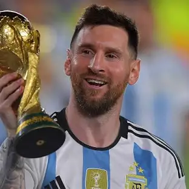
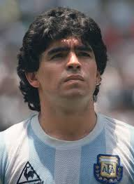
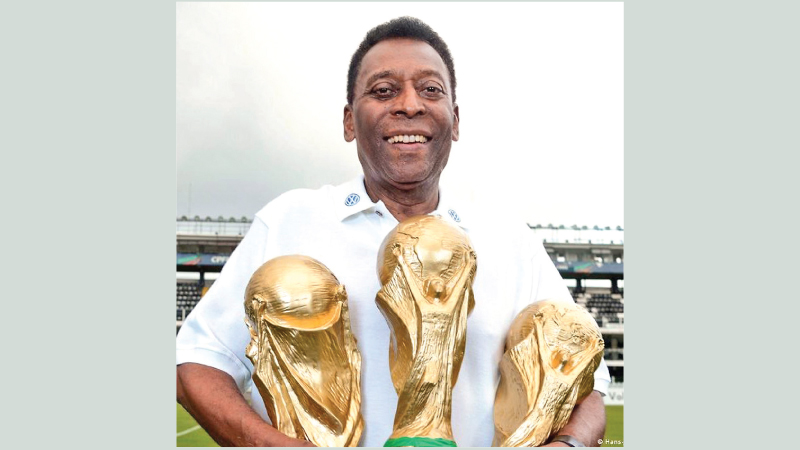

<!DOCTYPE html>
<html>
<head>

<style>
body {
  /* Option 1: Using a solid color */
  /* background-color: lightblue; */

  /* Option 2: Using a linear gradient */
  /* background-image: linear-gradient(to right, red, yellow); */

  /* Option 3: Using a radial gradient */
  /* background-image: radial-gradient(circle, red, yellow, green); */

  /* Option 4: Using an image (most common for non-repeating backgrounds) */
  background-image: url('goal.jpg'); /* Replace 'your-image.jpg' */
  background-size: cover; /* or contain, or specific dimensions */
  background-repeat: no-repeat; /* Ensure no repeat */
  background-attachment: fixed; /*Optional, for fixed background*/
}

/*Example of background size options*/
/*
background-size: auto; /* Default: actual size of the image */
/*background-size: cover; /* Scale the image to cover the entire container, may crop */
/*background-size: contain; /* Scale the image to fit within the container, may leave empty space */
/*background-size: 100% 100%; /* Stretch the image to fill the container, may distort */
/*background-size: 500px 300px; /* Set specific width and height */
*/

</style>
</head>
<body>


</body>
</html>
<html>
<head>
<title>Top 5 FootBall Players of All Time</title>
</head>
<body>
<h1>Top 5 Best Football Players of All Time (Ranked from worst to best)

<h1>5.George Best</h1>

<h2>George Best was a Northern Irish professional footballer, renowned for his exceptional skill, particularly as a winger, and most notably for his time at Manchester United. Widely regarded as one of the greatest footballers of all time, he combined incredible dribbling ability, pace, and goal-scoring prowess. His talent earned him the 1968 European Footballer of the Year award. Beyond his footballing talent, Best's charismatic personality and "playboy" lifestyle made him a cultural icon of the 1960s, though his life was also marked by struggles with alcoholism, which ultimately contributed to his premature death in 2005.


<h1>4.Cristiano Ronaldo</h1>

<h2>Cristiano Ronaldo, a Portuguese football icon, is celebrated for his exceptional athleticism, relentless drive, and prolific goal-scoring record. His career, spanning numerous top-tier clubs like Manchester United, Real Madrid, and Juventus, has been marked by a consistent pursuit of excellence, resulting in numerous individual awards, including multiple Ballon d'Or trophies, and team titles, most notably the UEFA European Championship with Portugal in 2016. Known for his powerful shots, aerial prowess, and dedication to fitness, Ronaldo has redefined the standards of professional football, solidifying his status as one of the greatest players of all time.


</h2>
<h1>3.Lionel Messi</h1>

<h2>Lionel Messi, an Argentine football virtuoso, is widely regarded as one of the greatest footballers of all time, celebrated for his exceptional dribbling, playmaking, and goal-scoring abilities. Throughout his career, primarily spent at Barcelona and later Paris Saint-Germain and Inter Miami, he has consistently displayed an unparalleled level of skill, earning numerous individual accolades, including a record eight Ballon d'Or awards, and leading his teams to numerous domestic and international titles. His ability to effortlessly glide past defenders, create scoring opportunities, and score goals with remarkable precision has captivated audiences worldwide, solidifying his legacy as a footballing icon. He also captained Argentina to victory in the 2022 FIFA World Cup.


</h2>
<h1>4.Diego Maradona</h1>

<h2>cemented his place in football history. His iconic "Hand of God" and "Goal of the Century" in the same match against England further solidified his status as a footballing icon. Despite controversies surrounding his personal life, Maradona's impact on the sport is undeniable, making him one of the most celebrated and revered figures in football.</h2>
<h1>1.Pelé</h1>

<h2>Pelé, the Brazilian football legend, is universally acclaimed as one of the greatest players of all time, earning the moniker "O Rei" (The King). A prolific goal-scorer and a master of the attacking game, he is the only player to have won three FIFA World Cup titles (1958, 1962, and 1970), a feat that solidified his legendary status. His exceptional skill, speed, and vision revolutionized the sport, and his goal-scoring records, while debated, remain a testament to his incredible talent. Beyond his on-field achievements, Pelé's charismatic personality and role as a global ambassador for football contributed to his enduring legacy as a symbol of the beautiful game.


    <div class="background-image"></div>
    <style>
        .background-image{
            background-image: url(goal.jpg);
            background-size:contain
            width: 100%;
            height: 100%;
        }
    </style>

</h2>
</body>
<html>
